1 · 달동네
NPC 3명이 레이저에 사라지는 것을 보고 도시 쪽으로 도망칩니다. 레이저 사망 연출을 여기서 보여 줍니다.
LEVEL DESIGN · UNREAL ENGINE 5
재직 중 약 2개월 동안 만든 UE5 개인 레벨입니다 (제목은 가제).
보이지 않는 감시자가 내려다보는 위압감과 공포를 노렸습니다. 배치·대사는 직접 하고, 구현은 AI 도구에 지시했습니다. AI 역할 분담 보기 ↓
달동네에서 레이저 감시자 ‘키클롭스’에게 쫓기며 시작해, 도시와 지하 수로에서 정보를 모으고, 멸망한 상층부를 지나 연구소 옥상에서 코어를 부숩니다.

NPC 3명이 레이저에 사라지는 것을 보고 도시 쪽으로 도망칩니다. 레이저 사망 연출을 여기서 보여 줍니다.

통행증이 없어 관문에서 거절당하고, 노숙자의 힌트로 강 샛길을 지나 서치라이트를 피해 도시에 들어갑니다.
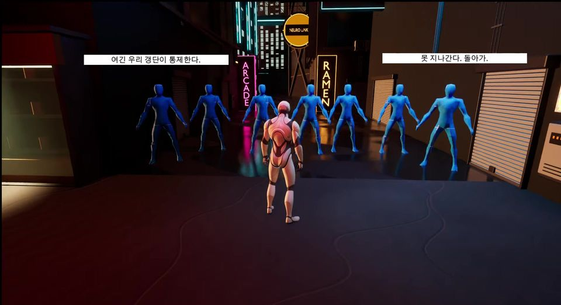
NPC들에게서 갱단과 레지스탕스, 안개에 가려졌던 감시자의 모습을 듣습니다.
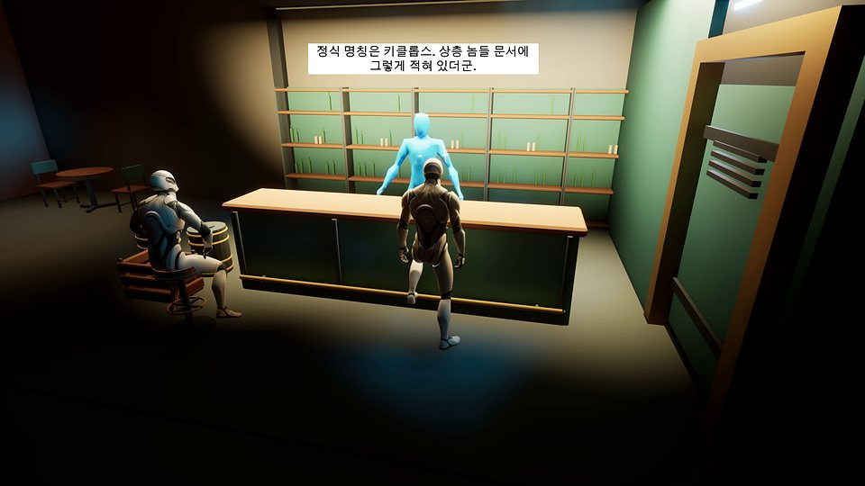
레지스탕스 본부에서 감시자의 이름 ‘키클롭스’를 알고 대항 무기를 얻습니다.
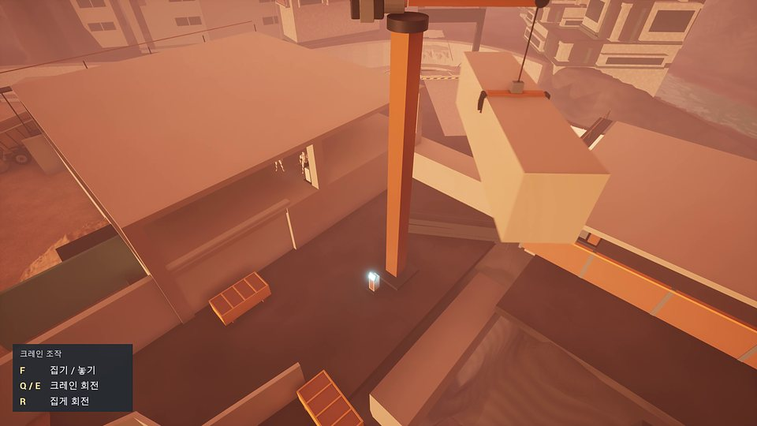
동료와 함께 무기를 써 보며 크레인 이동 퍼즐을 풉니다. 엘리베이터로 오르며 달동네가 파괴되는 모습을 봅니다.
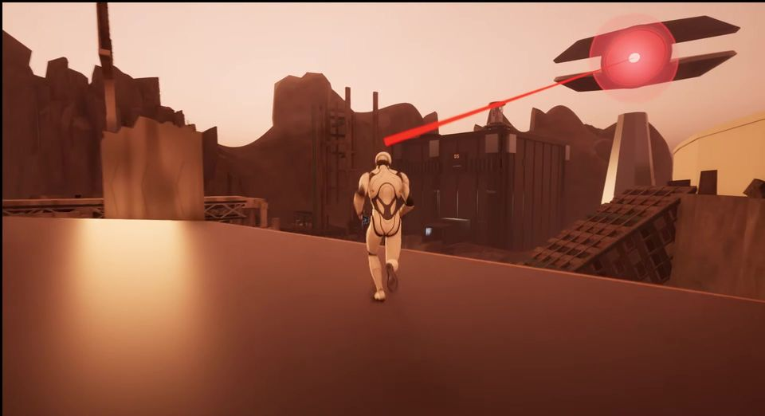
추격이 다시 시작됩니다. 펀치와 레이저로 벽을 부수고 광차를 움직여 연구소로 갑니다.
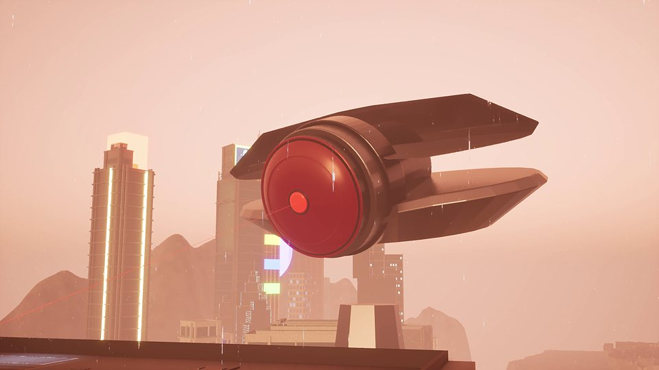
PC 기록으로 상층부가 멸망한 이유를 알고, 옥상에서 키클롭스의 코어를 부숩니다.
레벨 디자인은 결국 플레이어의 감정 곡선을 설계하는 일이라고 생각합니다. 처음부터 끝까지 긴장만 이어지면 플레이어는 큰 스트레스를 받거나, 반대로 적응해서 지루해합니다. 그래서 플레이로 긴장을 높이는 구간은 1구역 달동네 도주와 6구역 상층부 추격(광차) 두 곳에 두고, 그 사이를 정보 수집과 휴식, 무기 연습에 썼습니다. 마지막은 전투 대신 코어를 부수는 컷신 한 번으로 마무리합니다.
그래프를 좌우로 밀어 볼 수 있습니다.
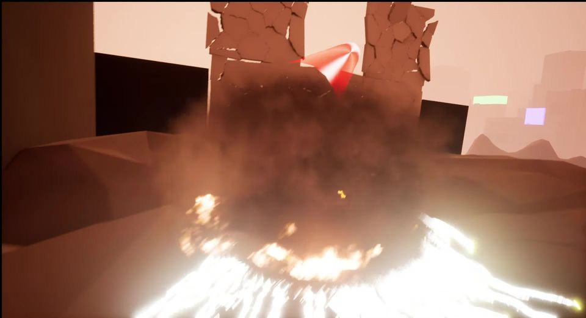
붉은 추적선이 노란 고정선으로 바뀐 뒤 빔이 나갑니다. 어느 구역에서나 맞으면 즉사합니다. 6구역에서는 이 레이저로 벽을 부수고 광차를 움직이지만, 피하기는 오히려 더 어렵습니다.
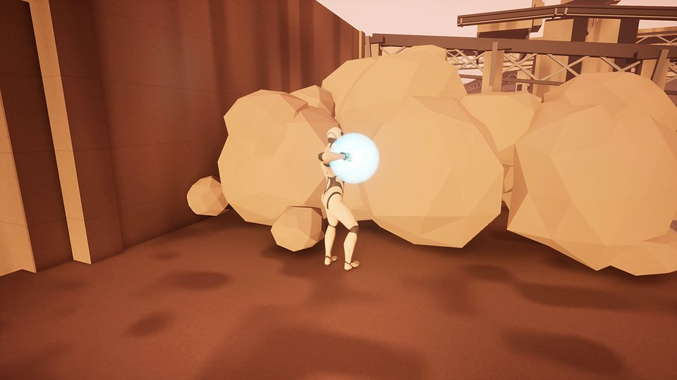
버튼을 2초 동안 눌러 모아야 벽과 바위를 부술 수 있고, 모으는 동안은 움직일 수 없습니다. 4구역에서 얻어 5구역에서 연습합니다.

펀치와 레이저의 힘으로 레일 위 광차를 밀어 연구소까지 이동합니다.


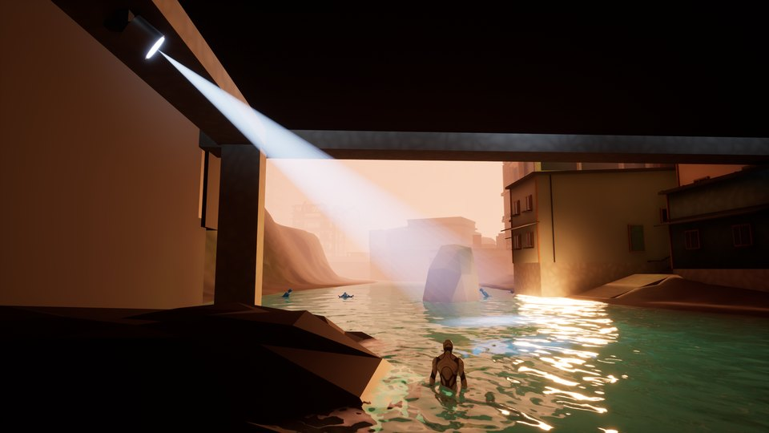
| 의도 | 높은 곳에서 나를 내려다보는, 보이지 않는 감시자의 위압감과 공포를 레벨 전체의 축으로 잡았습니다. |
| 1구역 | 감시자의 모습은 안개에 가려 보이지 않고, 붉은 조준선과 레이저만 보입니다. 첫 장면부터 NPC 3명이 레이저에 사라지게 해서, 정체를 모르는 공포로 시작합니다. |
| 2구역 | 처음부터 제가 넣자고 한 서치라이트가 다리 밑에서 수면을 훑다가, 플레이어를 찾으면 강을 벗어날 때까지 쫓아옵니다. 관문 중간까지 한 번도 걸리지 않으면 강제로 추적을 시작해서, 누구든 ‘누군가 보고 있다’는 감각을 한 번은 겪게 했습니다. 빛이 실제로 닿았을 때만 붉게 깜빡이도록 다듬었습니다. |
| 3구역 | 키클롭스 등장 컷신에서 감시자가 처음으로 모습을 드러냅니다. |
| 6구역 | 추격이 다시 시작되면 키클롭스는 상층부 위 높은 곳에 떠서 플레이어와 광차를 내려다보며 노립니다. |
| 확인 | 최종 플레이 영상 0:08–0:57, 2:03–2:26, 3:02–3:13, 8:16–8:38 |
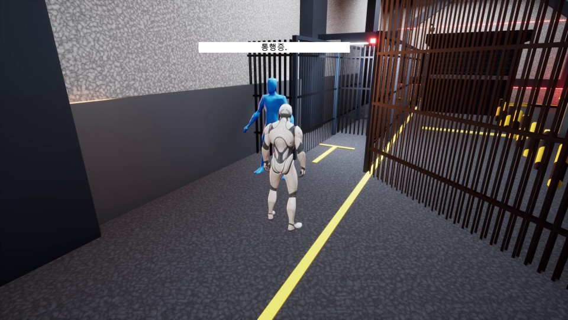
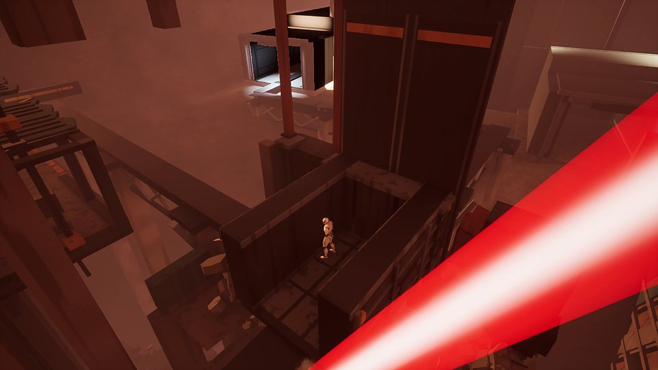
| 의도 | 길이 막히면 돌아갈 길을 스스로 찾게 하는 ‘거절과 우회’를 2구역과 6구역, 두 번 썼습니다. |
| 2구역 | 통행증이 없어 관문에서 거절당하고, 노숙자의 힌트를 따라 강 샛길로 돌아서 서치라이트를 피해 도시에 들어갑니다. |
| 6구역 | 광차가 닫힌 관문 앞 갈림길에서 멈추면, 펀치나 레이저로 광차를 왼쪽 레일로 보냅니다. 승강장 끝 스위치로 관문을 연 뒤 돌아와 통과하고, 스위치 옆에는 보상 상자를 마주 보게 두었습니다. |
| 지시 | 광차가 서는 위치, 옆으로 밀리는 방향, 관문의 폭과 높이, 스위치와 보상 상자 위치까지 단계별로 AI 도구에 지시했습니다. 광차가 갈림길에 닿기 전에 서 버리는 문제는 제가 원인을 짚어 바로잡았습니다. |
| 확인 | 최종 플레이 영상 1:40–2:26, 9:21–9:49 |
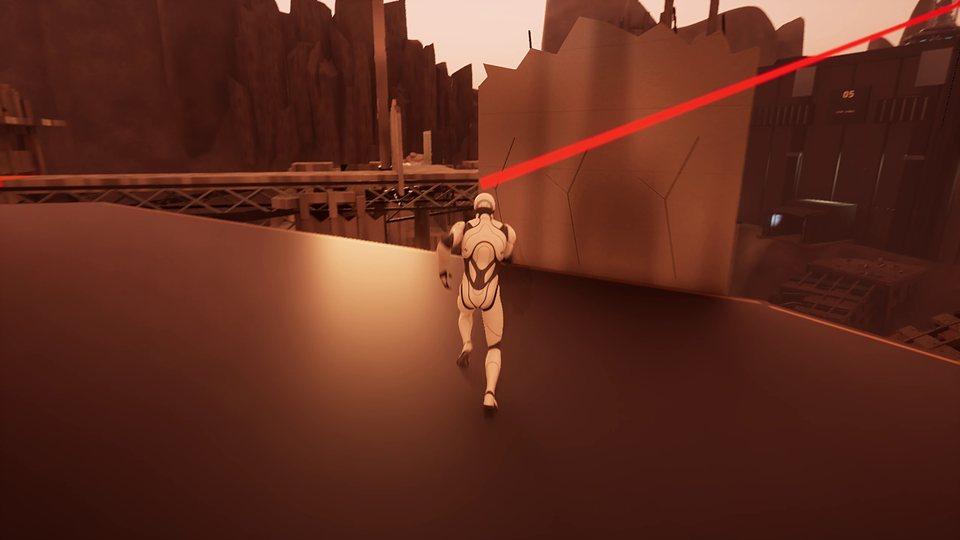
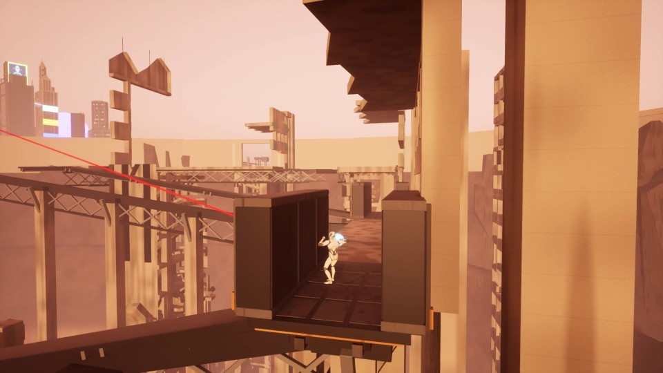
| 설계 | 6구역은 키클롭스가 머리 위에서 계속 노리는 구간입니다. 붉은 조준선이 노란 고정선으로 바뀌면 곧 레이저가 날아오기 때문에, 플레이어는 그 사이에 벽이나 기둥 뒤로 몸을 숨겨야 합니다. 엄폐물의 위치로 달리고 숨는 템포를 조절했습니다. |
| 광차 | 광차도 끝까지 타고 갈 수만은 없습니다. 언제 내려 엄폐물로 옮겨 갈지 플레이어가 판단하게 했습니다. |
레벨 디자이너의 일은 제가 직접 하고, 시스템 구현·최적화·아트 제작처럼 다른 직군이 맡을 일은 AI 코딩 도구에 지시한 뒤 결과를 검수했습니다.
| 직접 | 구역 구성과 흐름, 랜드스케이프 높이 조절, 건물·잔해·길 배치(6구역 전체 배치 포함), NPC 대사·자막·연구소 기록 작성, 사운드 선정과 삽입, 펀치 홀드 모션 수정 지시, 위 사례 3건의 설계와 판단 |
| AI 도구에 지시·검수 | 블루프린트 기능, 라이팅, 연출 카메라, VFX, 최적화, 액터·아트 에셋 생성 (Claude Code · Codex + Unreal MCP) |
| 검수 방식 | 구현은 Claude Code, 통합 검수는 Codex에 맡겨 결과를 교차 확인했습니다. 저는 녹화 영상과 스크린샷으로 문제 지점을 짚어 다시 지시했고, 작업 기록상 10월 13~18일 사이 수정 라운드가 85차까지 이어졌습니다. |
| AI 작업 규칙 | AI가 레벨을 임의로 바꾸지 못하도록 ‘동선과 페이싱은 제안만 하고, 제 승인 뒤에 바꾼다’를 두 AI의 공통 규칙에 넣었습니다. AI가 막혔던 기술 문제는 200건 넘게 기록하게 해서 같은 실수를 반복하지 않게 했습니다. |
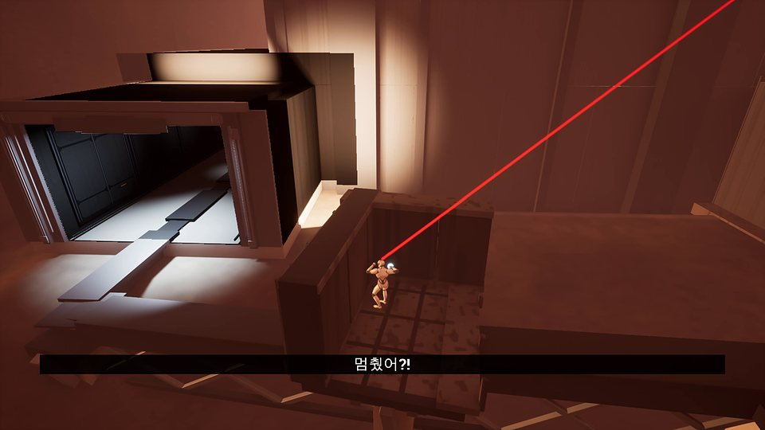
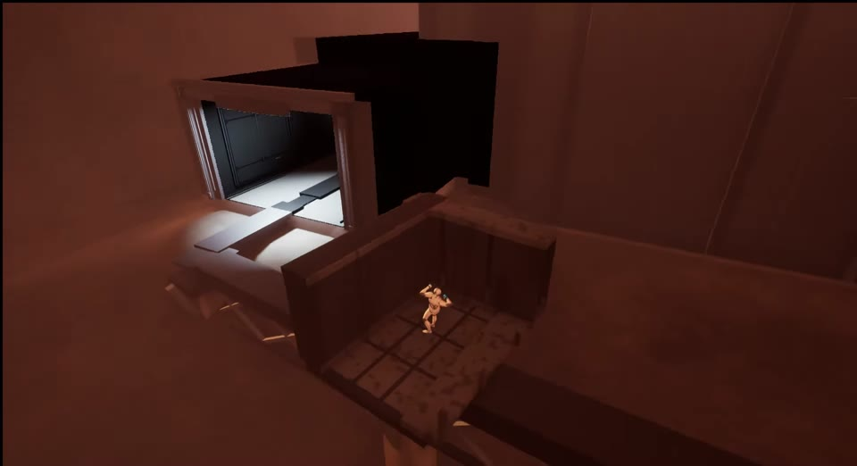
| 발견 | AI가 만든 광차가 레일 중간에서 한 번씩 걸려 멈추고, 다시 펀치해도 움직이지 않았습니다. 이 버그는 끝내 잡히지 않았습니다. |
| 판단 | 그래서 생각을 바꿨습니다. 위급한 순간에 탈것이 한 번 멈추면, 오히려 긴장을 만드는 장면이 될 수 있다고 봤습니다. |
| 변경 | 멈추면 “멈췄어?!” 자막을 띄우고, 차지 펀치를 한 번 더 하면 목적지까지 가도록 바꿨습니다. 레일에서 차지 펀치 2회가 기본 흐름이 됐습니다. |
| 확인 | 최종 플레이 영상 9:55–10:01 |